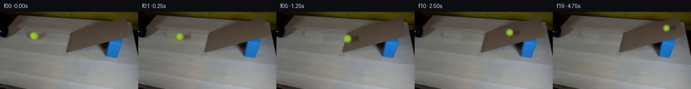

![首帧]()

Round 00
2026-11-05T09:47:13.534351+00:00像素候选变化代码 +195/−0inspection 更新
pixels d7db526fe76d8543 · code c7f84d629a4fb84a
查看本轮 generate.py 真实 diff
--- previous/generate.py +++ current/generate.py @@ -0,0 +1,195 @@ +"""PixelWorld case_0021: tennis ball rolls out of the black pipe onto the cardboard ramp. + +Method (see METHOD.md and OBSERVATION.md for the full rationale): + 1. Build a single clean static plate from frame 0 by donor-copying the ball + + cast-shadow region from an equally-lit, same-row strip of table. + 2. Model the tennis ball as a radial-shaded soft disc whose alpha profile and + color rings were measured directly off frame 0. + 3. Model the shadow (warm multiply) as two soft ellipses fitted to frame 0. + 4. Physics: constant roll on the table, uniform deceleration climbing the ramp; + screen-space path, perspective radius shrinking with image row. + 5. Each frame integrates 7 sub-stamps of ball + shadow over a 0.08 s exposure + window (explains the slight motion smear of the source ball). +Only local numpy/PIL pixel operations are used. Frame 0 is copied unchanged. +""" +from pathlib import Path +import numpy as np +from PIL import Image + +import artifact_io + +CASE = Path(__file__).parent +SRC = np.array(Image.open(CASE / "first_frame.png")).astype(np.float32) +H, W = SRC.shape[:2] +assert (H, W) == (144, 256) + +# ---------------------------------------------------------------------------- +# 1. Clean static plate: remove frame-0 ball + shadow (table-only repair). +# ---------------------------------------------------------------------------- +plate = SRC.copy() +RY0, RY1, RX0, RX1 = 35, 55, 50, 89 # replaced rectangle +plate[RY0:RY1, RX0:RX1] = SRC[RY0:RY1, 90:129] # same-row donor strip +for i, x in enumerate(range(RX0, RX0 + 4)): # feather left join + w = (i + 1) / 5 + plate[RY0:RY1, x] = (1 - w) * SRC[RY0:RY1, x] + w * plate[RY0:RY1, x] +for i, x in enumerate(range(RX1 - 4, RX1)): # feather right join + w = (4 - i) / 5 + plate[RY0:RY1, x] = (1 - w) * SRC[RY0:RY1, x] + w * plate[RY0:RY1, x] + +# ---------------------------------------------------------------------------- +# 2. Ball sprite template (radius r0 = 7.7 px scale), radial, measured values. +# ---------------------------------------------------------------------------- +# alpha profile vs radial distance rho, averaged over top/bottom of source ball +RHO_A = np.array([0.0, 4.5, 5.5, 6.5, 7.5, 8.5, 9.5]) +ALPHA = np.array([1.0, 0.99, 0.93, 0.74, 0.49, 0.24, 0.0]) +# intrinsic color rings (median RGB), measured by unmixing source ball +RHO_C = np.array([0.0, 3.0, 4.2, 5.5, 6.5, 7.5, 8.5, 9.5]) +COLOR = np.array([ + [154, 197, 56], [151, 195, 53], [144, 186, 46], [134, 174, 47], + [121, 153, 50], [106, 126, 53], [91, 105, 47], [80, 92, 45], +], dtype=np.float32) + +TS = 27 # template canvas (27x27), center at (13,13) +TC = (TS - 1) / 2.0 +ty, tx = np.mgrid[0:TS, 0:TS].astype(np.float32) +tr = np.sqrt((tx - TC) ** 2 + (ty - TC) ** 2) +talpha = np.clip(np.interp(tr, RHO_A, ALPHA, right=0.0), 0, 1)[..., None] +# color: per-channel radial interp +tcolor = np.empty((TS, TS, 3), np.float32) +for c in range(3): + tcolor[..., c] = np.interp(tr, RHO_C, COLOR[:, c], right=COLOR[-1, c]) +ball_tpl = np.concatenate([tcolor, talpha * 255.0], axis=2) # RGBA, 0-255 +R0 = 7.7 # ball screen radius at the source position + +# ---------------------------------------------------------------------------- +# 3. Shadow template: two fitted soft ellipses (least-squares to the measured +# frame-0 darkening field), plus a per-channel multiply-factor LUT in q. +# ---------------------------------------------------------------------------- +SH_ANG = -0.458 +CSA, CSI = np.cos(SH_ANG), np.sin(SH_ANG) +SH_Q = np.array([0.0, 0.08, 0.16, 0.25, 0.31, 0.45]) +SH_FAC = np.array([ + [1.000, 1.000, 1.000], + [0.936, 0.927, 0.905], + [0.876, 0.849, 0.805], + [0.799, 0.749, 0.700], + [0.752, 0.686, 0.622], + [0.660, 0.580, 0.500], +], np.float32) + + +def shadow_field(dx, dy, f): + """Darkening q for a ball whose center is offset (dx,dy); f = r/R0.""" + # far cast ellipse (tilted up toward the ramp) + ox, oy = 15.72 * f, -0.52 * f + u = (dx - ox) * CSA + (dy - oy) * CSI + v = -(dx - ox) * CSI + (dy - oy) * CSA + q = 0.319 * np.exp(-0.5 * ((u / (5.49 * f)) ** 2 + (v / (3.48 * f)) ** 2)) … diff truncated; 108 more lines …